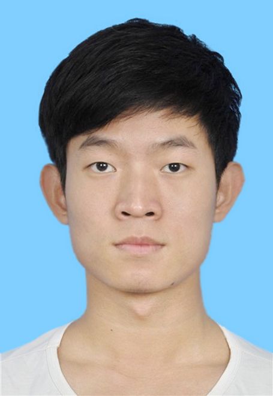

I'm currently a postgradute students of Department of Statistics, The Chinese University of Hongkong, HK, China, supervised by Dr.Yuanyuan Lin.
I obtained my bachelor degree in Statistics from Sun Yat-Sen University from 2012 to 2016,
and master degree in Applied Maths and Statistics in The Johns Hopkins University from 2017 to 2019.
I have work as data analytic in HSBC electronic data processing limit(Guangdong) in 2016,
and as an algorithm engineer in Qiyuan Lab from April, 2021 to August, 2022.
My research interest are Deep Learning, Reinforcement Learning algirhtms and its theory.